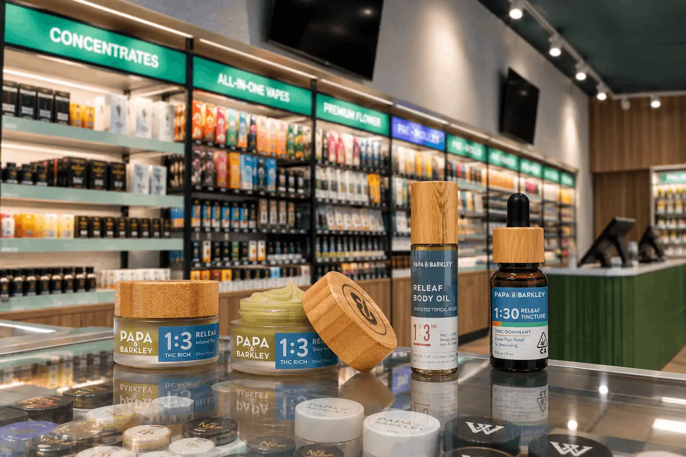

Papa & Barkley Topicals: Balms, Patches, and Other Options Compared
September 2, 2026 · 13 min read

Topicals can look deceptively simple.
A balm goes on your skin. A patch sticks on. A body oil gets rubbed in.
But Papa & Barkley topicals aren’t interchangeable just because they all belong in the same general category.
The brand currently offers multiple formats, including balms, body oils, balm sticks, and transdermal patches, with different CBD ratios and different delivery approaches. Wellgreens currently lists Papa & Barkley products within its San Diego cannabis selection, although the exact products available can change with inventory.
The biggest distinction is this: most traditional cannabis topicals are intended for localized application to the skin, while transdermal patches are designed to deliver cannabinoids through the skin and into systemic circulation. That difference matters if you’re comparing a balm with a patch and assuming they work the same way.
So before choosing among Papa & Barkley topicals, look at the format, cannabinoid ratio, ingredients, intended application, and whether you’re shopping for a localized topical or a transdermal product.
TLDR Quick Guide
Here’s the quick comparison:
- Balms are rubbed directly onto a targeted area.
- Body oils cover larger areas more easily and can work well for massage-style application.
- Balm sticks provide a less-messy way to apply topical product directly from a tube.
- Transdermal patches are designed differently from ordinary topicals and may deliver cannabinoids into the bloodstream.
- Papa & Barkley offers multiple CBD ratios rather than one universal formulation.
- Higher-THC formulations and patches deserve extra attention because THC can be intoxicating depending on the product and delivery method.
- The brand emphasizes whole-plant, solventless cannabis formulations.
- Product format matters just as much as the cannabinoid number on the package.
- Check the exact product label because ratios and cannabinoid totals vary.
- Current Wellgreens inventory can change, so check availability before visiting.
You can browse Papa & Barkley at Wellgreens, compare other Wellgreens cannabis brands, or check in-stock cannabis products before shopping.
Detailed Breakdown

What Are Papa & Barkley Topicals?
Papa & Barkley is a California cannabis brand founded in 2015 and known particularly for wellness-oriented products.
Its topical lineup has grown beyond the original balm concept to include multiple formats and cannabinoid ratios.
Depending on current product availability, the broader Papa & Barkley lineup can include:
- Releaf Balms
- Body Oils
- Balm Sticks
- Transdermal Patches
- CBD-focused formulations
- CBD ratio products
Wellgreens currently highlights the brand’s solventless, whole-plant positioning and lists products such as CBD-rich and THC-rich balms among its available or rotating selections.

What Makes Papa & Barkley Different?
The brand places significant emphasis on its extraction and infusion process.
Papa & Barkley describes its products as using a solventless, whole-plant approach, with formulations designed around different cannabinoid ratios rather than simply maximizing THC.
That means one product may emphasize CBD, another may contain a more balanced CBD ratio, and another may be THC-rich.
For shoppers, that creates two separate decisions:
Which format do I want?
and
Which cannabinoid ratio am I comfortable with?
Both matter.
Balms: The Classic Papa & Barkley Format
Balms are probably the format most closely associated with the brand.
They’re semi-solid topical products designed to be rubbed into a specific area of skin.
Papa & Barkley currently lists multiple balm formulations, including CBD-rich and THC-rich ratios.
Why Choose a Balm?
A balm may appeal if you want:
- Targeted application
- A thicker texture
- More control over where product is applied
- A product that’s easy to keep in a small container
- A traditional topical format
Balms are generally better suited to relatively specific areas than whole-body application.
If you only want to apply product to a shoulder, wrist, knee, or another small region, scooping out a small amount of balm can be more practical than covering the same area with oil.

Body Oils: Better for Larger Areas
Papa & Barkley also offers body oils within its broader topical lineup.
Body oil has a thinner consistency than balm and can spread more easily over larger areas.
That makes it particularly convenient for:
- Shoulders
- Back
- Legs
- Larger muscle groups
- Massage-style application
Papa & Barkley describes its body oils as whole-plant topical formulations made with its solventless infusion process.
Balm vs Body Oil
The difference isn’t necessarily that one is “stronger.”
It’s often about application.
Choose balm when you want something thick and targeted.
Choose oil when you want easier coverage over a larger area.
Texture matters more than people expect.
Balm Sticks: Less Mess, More Convenience
A balm stick takes the basic balm idea and puts it into a twist-up applicator.
That can make it easier to apply without getting product on your fingers.
Papa & Barkley’s current broader lineup includes Active Releaf Balm Stick products alongside its jars, oils, and patches.
Why Consider a Balm Stick?
A stick may make sense if you value:
- Portable application
- Less mess
- Direct application
- Easy storage
- Convenient use while traveling or away from home
The tradeoff is that a stick isn’t always as easy to spread widely as body oil.
Again, format decides a lot.
Patches Are Not the Same as Ordinary Topicals
This is the most important distinction in the entire comparison.
A standard balm or body oil is generally used as a localized topical.
A transdermal patch is designed to allow cannabinoids to pass through the skin over time.
Papa & Barkley’s current patch lineup includes different CBD ratios such as 3:1, 1:1, and 1:3 products. The company states that its patches are designed for extended cannabinoid delivery and that THC-containing versions can produce psychoactive effects depending on the formulation.
That’s a very different consideration from applying a balm.
Why Can Patches Feel Different?
Ordinary topicals and transdermal products use different delivery approaches.
Papa & Barkley describes standard topical products such as balms and oils as primarily localized, while its transdermal patches are formulated to move cannabinoids through the skin into the bloodstream.
That means a THC-containing patch should not be treated like a jar of balm simply because both touch your skin.
For adult shoppers, the practical takeaway is simple:
Read the delivery method before assuming a product is non-intoxicating.

How Long Do Papa & Barkley Patches Last?
Papa & Barkley currently describes its transdermal patches as offering extended release, with some products marketed for up to approximately 12 hours.
Actual experience can vary between individuals and products.
The duration printed on the package or manufacturer instructions is the information to follow.
Don’t assume that because a patch remains physically attached, every person will perceive its effects for exactly the same amount of time.
Understanding CBD Ratios
When comparing Papa & Barkley topicals, you’ll see ratios such as:
- 3:1
- 1:1
- 1:3
These ratios describe the relative amounts of cannabinoids in the formulation.
3:1
A 3:1 CBD product contains more CBD than THC.
1:1
A 1:1 formulation contains roughly equal amounts.
1:3
A 1:3 CBD formulation contains more THC than CBD.
The exact milligram amount matters too.
A ratio tells you the relationship between cannabinoids, not necessarily the total amount in the package.

Ratios Don’t Tell You Everything
Suppose two products both say 1:1.
One could contain 5mg CBD and 5mg THC.
Another could contain 50mg CBD and 50mg THC.
Same ratio.
Very different total amount.
That’s why you should read:
- CBD total
- THC total
- Ratio
- Product type
- Delivery method
Don’t stop at the giant ratio printed on the front.
Should You Choose CBD-Rich or THC-Rich Topicals?
That depends on the product format and your preferences.
CBD-rich products may appeal to shoppers who want formulations with less THC.
THC-rich products may appeal to adults specifically seeking that cannabinoid profile.
But with transdermal products, higher THC deserves particular caution because systemic absorption can potentially produce intoxication.
Choose based on the complete label and your prior experience, not on the assumption that all skin-applied cannabis products behave identically.

Will Papa & Barkley Balms Make You High?
Traditional non-transdermal cannabis balms are generally designed for localized skin application rather than systemic delivery.
That means they aren’t intended to produce the same kind of intoxication associated with inhaled or swallowed THC products.
However, transdermal patches are different, and THC-containing patches may be psychoactive because they’re designed to deliver cannabinoids through the skin.
This is why reading the words topical and transdermal carefully matters.
What About Body Oil?
Body oil generally belongs in the same localized topical category as balm rather than the transdermal-patch category.
It’s primarily a different texture and application method.
Papa & Barkley currently offers THC-rich, CBD-rich, and other ratio-based body oils within its broader catalog.
Again, check the exact package because cannabinoid content can differ from one product to another.

Can You Use These Products Anywhere on the Body?
Not necessarily.
Topicals should generally be used according to the manufacturer’s directions.
Avoid applying products to:
- Eyes
- Inside the mouth
- Broken skin unless the label specifically permits it
- Irritated areas without checking instructions
- Sensitive areas not indicated by the manufacturer
Patches also have specific application instructions.
Papa & Barkley recommends applying its patches to clean, dry skin and following the product’s placement guidance.
Check the Ingredient List
Cannabinoids aren’t the only ingredients touching your skin.
Papa & Barkley products can include carrier oils, botanical ingredients, and essential oils depending on the formulation.
Its current patch ingredients, for example, include components such as jojoba oil, avocado oil, and several essential oils.
If you have sensitive skin or known allergies, review the ingredient list before use.
“Natural” does not automatically mean “allergy-proof.”
Plants are perfectly capable of irritating skin too.

Patch Adhesives Deserve Attention
If you’re choosing a transdermal patch, cannabinoid content isn’t the only thing making contact with your skin.
The adhesive matters as well.
Anyone with sensitive skin should pay attention to:
- Irritation
- Redness
- Itching
- Discomfort around the adhesive area
Follow the manufacturer’s directions for removing the patch and discontinue use if a product causes an unexpected skin reaction.
If the reaction is significant or persistent, seek appropriate medical guidance.
Balm, Oil, Stick, or Patch: Which Is Most Convenient?
Convenience depends on where and how you plan to use it.
Choose a Balm When:
- You want targeted application.
- You prefer a thicker consistency.
- You don’t mind applying with your fingers.
- You want a traditional topical format.
Choose Body Oil When:
- You want to cover a larger area.
- Massage-style application appeals to you.
- You prefer a lightweight liquid texture.
Choose a Balm Stick When:
- You want a portable format.
- You prefer direct application.
- You want less product on your hands.
Choose a Patch When:
- You’re specifically interested in a transdermal format.
- Extended-release design is a priority.
- You understand that THC-containing patches may be intoxicating.
That’s a much better comparison than trying to declare one format the universal winner.

Are Papa & Barkley Topicals Full Spectrum?
Papa & Barkley describes its products as whole-plant and full-spectrum, with formulations intended to retain multiple naturally occurring cannabis compounds.
That can include cannabinoids and terpenes rather than isolating one single compound.
“Full spectrum” is a product-description term, though, not a guarantee that a product will create one specific effect.
Individual experience varies.
What Does Solventless Mean?
Papa & Barkley emphasizes solventless processing across much of its brand positioning.
In simple terms, the company says it avoids hydrocarbon extraction for these products and uses whole-plant infusion and rosin-oriented processes.
For shoppers who care about production method, that’s useful information.
It doesn’t mean you can ignore the rest of the label.
Ratio, cannabinoid content, format, ingredients, and intended use still matter.

Can You Combine Different Topicals?
This is where “more must be better” becomes a bad shopping philosophy.
Layering multiple cannabinoid products can make it harder to understand how much you’re using, especially when one of them is transdermal.
If you’re considering combining:
- Balm
- Oil
- Patch
- Oral THC
- Other cannabis products
keep total THC exposure in mind.
This matters particularly with transdermal patches because they may contribute to systemic THC exposure.
How to Use Cannabis Topicals More Thoughtfully
If you’re still learning the category, Wellgreens’ guide on how to use cannabis topicals for everyday wellness covers basic product formats and practical considerations.
A useful starting process is:
- Read the full label.
- Identify whether the product is topical or transdermal.
- Check CBD and THC content.
- Review ingredients.
- Follow manufacturer directions.
- Pay attention to your own response.
Simple beats improvisational chemistry.

What Should You Check Before Buying?
Before choosing among Papa & Barkley topicals, compare the specific product rather than the brand name alone.
Product Format
Is it a balm, body oil, stick, or patch?
Cannabinoid Ratio
CBD-rich, balanced, or THC-rich?
Total Cannabinoids
How many milligrams are actually in the product?
Delivery Method
Localized topical or transdermal?
Ingredients
Any botanical oils, fragrances, or components you need to avoid?
Instructions
How is the manufacturer directing you to use it?
Current Availability
Is that exact product actually in stock?
Those questions narrow the category down quickly.
Why Current Inventory Matters
Cannabis product selection changes.
Wellgreens’ current Papa & Barkley page may show only a limited number of products even though the brand itself manufactures a broader lineup.
That means reading about a patch or body oil doesn’t necessarily mean your nearest store has one today.
Check in-stock cannabis products before traveling specifically for a particular format.

How Does Papa & Barkley Compare With Other Cannabis Brands?
Wellgreens carries dozens of cannabis brands across categories.
If Papa & Barkley isn’t available in the format you want, compare other products based on:
- Topical vs transdermal delivery
- CBD ratio
- Milligrams
- Ingredients
- Texture
- Product size
- Price
Brand reputation is useful.
Product fit matters more.
What Should First-Time Topical Shoppers Ask?
If you’re unfamiliar with cannabis topicals, ask the dispensary staff:
- Is this product topical or transdermal?
- How much CBD and THC does it contain?
- Could this format be intoxicating?
- Is this intended for targeted or larger-area application?
- How should it be stored?
- What does the current label say about use?
- Are there other ratios available?
Wellgreens also maintains a FAQ for general questions about dispensary shopping, purchasing requirements, and related store policies.

Where Can You Find Papa & Barkley in San Diego?
Wellgreens Dispensary carries Papa & Barkley within its broader San Diego cannabis selection.
Because stock changes, the smartest approach is to check the current menu before making a special trip for one product.
You can also browse the dedicated Papa & Barkley page and compare alternatives through Wellgreens cannabis brands.
That way, you’re choosing from what’s actually available, not from a product list frozen in time.
Key Takeaways
- Papa & Barkley topicals come in multiple formats. Balms, body oils, balm sticks, and transdermal patches aren’t interchangeable.
- Balms are useful for targeted application. Their thicker texture makes it easy to focus on a smaller area.
- Body oils spread more easily. They may be more practical for larger areas or massage-style application.
- Balm sticks prioritize convenience. They offer direct application with less product on your fingers.
- Transdermal patches are different from ordinary topicals. They are designed to deliver cannabinoids through the skin and can potentially produce systemic effects.
- CBD ratio matters. Compare CBD-rich, balanced, and THC-rich formulations alongside total milligrams.
- THC-containing patches deserve extra caution. Unlike conventional balms, transdermal THC may be intoxicating.
- Check ingredients as well as cannabinoids. Botanical oils and adhesives can matter for sensitive skin.
- Availability changes. Papa & Barkley’s full catalog may be larger than what’s currently stocked at one dispensary.
- Compare the exact product before buying. Visit Wellgreens to review current Papa & Barkley products and other regulated cannabis topical options.
FAQs
01What are the main types of Papa & Barkley topicals?
Papa & Barkley’s broader topical lineup includes balms, body oils, balm sticks, and transdermal patches in different cannabinoid ratios. Balms, oils, and sticks are generally designed for localized skin application, while patches are formulated differently for transdermal delivery. Current availability varies, so check the specific product listing before visiting a dispensary.
02What is the difference between a Papa & Barkley balm and patch?
A balm is rubbed onto a localized area of skin, while a transdermal patch is designed to release cannabinoids through the skin over time. Because patches can deliver THC systemically, THC-containing versions may potentially produce psychoactive effects. Read the exact cannabinoid ratio and delivery method before choosing between the two formats.
03Do Papa & Barkley topicals contain THC?
Some Papa & Barkley topicals contain THC, while others are CBD-rich or use different CBD ratios. Products such as 1:1, 3:1, and 1:3 formulations contain different relative amounts of the two cannabinoids. Always check total milligrams as well as the ratio because two products with the same ratio can contain different cannabinoid totals.
04Can Papa & Barkley topicals make you high?
Traditional localized balms and body oils aren’t designed to produce the same systemic effects as inhaled or swallowed THC. Transdermal patches are different because they’re designed to move cannabinoids through the skin, and THC-containing patches may be intoxicating. Check the delivery method and THC content instead of assuming every skin-applied cannabis product works the same way.
05Where can I buy Papa & Barkley topicals in San Diego?
Wellgreens carries Papa & Barkley within its San Diego-area cannabis selection, although specific formats and ratios can rotate with inventory. Check the current in-stock menu before traveling for a particular balm, patch, oil, or other product. Adults should also review Wellgreens’ FAQ for current purchasing requirements and dispensary policies.
Shop this guide
Keep reading

Why Is Your Cake Disposable Vape Not Hitting and What Should You Check?
You pick up your Cake disposable vape, take a draw, and… nothing. No vapor, no response, just a device that seems to have called it quits…

Cannabiotix Flower vs Concentrates: Which Product Type Fits Your Needs?
If you’re comparing Cannabiotix flower vs concentrates, you’ve probably noticed that both categories offer distinct characteristics, from…

Live Rosin vs Live Resin: Which Concentrate Should You Choose?
Two cannabis concentrates. Similar names. Very different production methods. If you’ve been comparing live rosin vs…
Ready to Start?
Premium cannabis. Expert guidance. Fast pickup. Join thousands of San Diegans who trust Wellgreens.